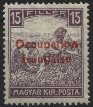
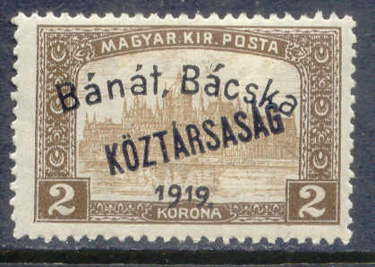
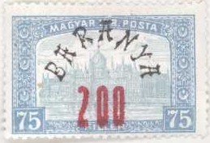
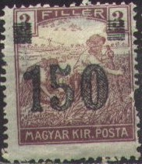
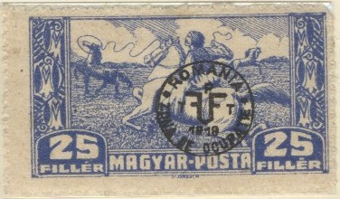

Return To Catalogue - Hungary - Western Hungary (Lajtabansag and Orgland)
Note: on my website many of the
pictures can not be seen! They are of course present in the
catalogue;
contact me if you want to purchase the catalogue.



This overprint exists on the following values:
* On 1916 war charity issue: 10 + 2 f red (blue or red (RR)
overprint), 15 + 2 f violet (red overprint), 40 + 2 f red (blue
overprint).
* On newspaper stamps: 2 f orange (Hirlapjegy type, blue
overprint), 2 f green and red (inscription 'Surgos', red
overprint).
* On harvester type (Magyar Kir Posta): 2 f brown (red
overprint), 3 f lilac (red overprint), 5 f green (red overprint),
6 f blue (red overprint), 10 f red (blue overprint), 15 f violet
(with violet '15', red overprint), 15 f violet (with white '15',
red overprint, RR), 20 f brown (red overprint), 35 f brown (red
overprint), 40 f olive (red overprint). Surcharged: '45' (red,
two types) on 2 f brown (red overprint) and '50' (red, two types)
on 3 f lilac (red overprint).
* On parliament issue (Magyar Kir Posta): 50 f lilac (blue
overprint), 75 f blue (blue overprint), 80 f green (blue
overprint), 1 K red (blue overprint), 2 K brown (blue overprint),
3 K violet and grey (blue overprint), 5 K brown (blue overprint),
10 K brown and lilac (blue overprint).
* On 1918 Charles and Zita issue: 10 f red (blue overprint), 20 f
brown (red overprint), 25 f blue (red overprint), 40 f olive (red
overprint).
* On stamps with 'KOZTARSASAG' overprint: 2 f brown (red
overprint), 3 f lilac (red overprint), 4 f grey (red overprint),
5 f green (red overprint), 6 f blue (red overprint), 10 f red
(blue overprint), 20 f brown (red overprint), 25 f blue (red
overprint), 35 f brown (red overprint), 40 f olive (harvester,
red overprint), 40 f olive (Zita, red overprint), 50 f violet
(Zita, red overprint), 1 K red (blue overprint), 3 K violet and
grey (blue overprint). Surcharged '10' (two types) on 1 K red.
* On harvester stamps (Magyar Posta): 5 f green, 10 f red (blue
overprint), 20 f brown.
* On newspaper stamps with overprint 'Porto': 12 on 2 f orange,
15 on 2 f orange, 30 on 2 f orange, 50 on 2 f orange, 100 on 2 f
orange.
* On postage due stamps: 2 f, 10 f, 12 f, 15 f, 20 f (all in
colour green and red, with the overprint in blue).
 
(Examples)
This overprint exists on the following values:
* On 'Turul' issue: 50 f red on blue.
* On 1916 war charity issue: 10 + 2 f red, 15 + 2 f violet, 40 +
2 f red.
* On newspaper stamps: 2 f orange.
* On harvester type (Magyar Kir Posta): 2 f brown, 3 f lilac, 5 f
green, 6 f blue, 15 f violet, 35 f brown.
* On parliament issue (Magyar Kir Posta): 50 f lilac, 75 f blue,
80 f green, 1 K red, 2 K brown (overprint black or red:R), 3 K
violet and grey, 5 K brown, 10 K brown and lilac.
* On 1918 Charles and Zita issue: 10 f red, 20 f brown, 25 f
blue, 40 f olive, 50 f lilac.
* On stamps with 'KOZTARSASAG' overprint: 4 f grey (overprint
black or red:R), 5 f green, 6 f blue, 10 f red, 15 f violet, 20 f
brown, 25 f blue (Charles), 40 f olive (overprint black or
red:R), 1 K red, 2 K brown, 3 K violet and grey, 5 K brown, 10 K
brown and lilac.
* On harvester stamps (Magyar Posta): 10 f red, 20 f brown, 25 f
blue.
* On express stamp: 30 f on 2 f olive and red.
* On postage due stamps: 2 f, 10 f, 15 f, 20 f, 30 f, 50 f (all
in colour green and red).
* On saving stamp (crown in circle): 50 f on 10 f lilac.


This overprint exists on the following values:
* On 'Turul' issue: 6 f olive, 50 f red on blue, 60 f green on
red, 70 brown on green (overprint black or red), 80 f violet.
With addtional 'Hady Segely' overprint: 50 f red on blue..
* On harvester type (Magyar Kir Posta): 2 f brown (overprint
black or red), 3 f lilac (overprint black or red), 5 f green
(overprint black or red), 6 f blue (overprint black or red), 15 f
violet, 20 f brown, 25 f blue, 35 f brown, 40 f olive.
Surcharged: 45 on 2 f brown, 45 on 5 f green, 45 on 15 f violet.
* On parliament issue (Magyar Kir Posta): 50 f lilac, 75 f blue,
80 f green, 1 K red, 2 K brown, 3 K violet and grey, 5 K brown,
10 K brown and lilac.
* On 1918 Charles and Zita issue: 10 f red, 20 f brown (overprint
black or red), 25 f blue (overprint black or red), 40 f olive
(overprint black or red).
* On stamps with 'KOZTARSASAG' overprint: 2 f brown, 40 f olive
(Zita, overprint black or red). Surcharged 45 on 2 f brown
(overprint black or red)
* On express stamp: 105 on 2 f olive and red.
* On 1916 war charity issue: 10 + 2 f red, 15 + 2 f violet.
* On postage due stamps: 2 f, 10 f, 20 f, 40 on 2 f (all in
colour green and red).

This overprint exists on the following values:
* On newspaper stamp 10 on 2 f orange.
* On express stamp: 10 on 2 f olive and red.
* On saving stamp (crown in circle): 10 on 10 f lilac.
* On Magyar Kir Posta types: 20 on 2 f brown, 50 on 5 f green,
150 on 15 f violet, 200 on 75 f blue.
* On stamps with 'KOZTARSASAG' overprint: 150 on 15 f violet.
* On Magyar Posta types: 20 on 2 f brown, 30 on 6 f blue, 50 on 5
f green, 100 on 25 f blue, 100 on 40 f green, 100 on 45 f orange,
150 on 20 f brown.
First (Debreczen) overprint 'ZONA DE OCUPATIE ROMANIA 1919 PTT' in an ellipse
This overprint exists on the following values:
* On 'Turul' issue: 2 f yellow (blue overprint), 3 f orange (blue
overprint), 6 f olive (red overprint).
* On 1916 war charity issue: 10 + 2 f red (blue overprint), 15 +
2 f violet, 40 + 2 f red (blue overprint).
* On newspaper stamps: 2 f orange (blue overprint).
* On flood charity stamps of 1914: 2 f yellow (blue overprint), 3
f orange (blue overprint).
* On harvester type (Magyar Kir Posta): 2 f brown (blue
overprint), 3 f lilac (blue overprint), 5 f green (blue
overprint), 6 f blue (red overprint), 10 f red (value in white,
blue overprint), 15 f violet (value in white, blue overprint), 15
f violet (value in colour, red or black overprint), 25 f blue, 35
f brown (blue overprint), 40 f olive (blue overprint).
Surcharged: 35 on 3 f lilac (bue overprint), 45 on 2 f brown
(blue overprint).
* On parliament issue (Magyar Kir Posta): 50 f lilac (blue
overprint), 75 f blue, 80 f green (red overprint), 1 K red (blue
overprint), 2 K brown, 3 K violet and grey (blue, red or black
overprint), 5 K brown, 10 K brown and lilac (blue overprint).
Surcharged: 3 K on 75 f blue, 5 K on 75 f blue, 10 K on 80 f
green (red overprint).
* On 1918 Charles and Zita issue: 10 f red (blue overprint), 15 f
violet (red or black overprint), 20 f brown (red, blue or black
overprint), 25 f blue (red or black overprint), 40 f olive (blue
overprint), 50 f lilac (blue overprint).
* On stamps with 'KOZTARSASAG' overprint: 2 f brown (blue
overprint), 3 f lilac (blue overprint), 4 f grey (red overprint),
5 f green (blue overprint), 6 f blue (red overprint), 10 f red
(harvester, blue overprint), 10 f red (Charles, blue overprint),
10 + 2 f red (war charity, blue overprint), 15 f violet (Charles,
red or black overprint), 15 + 2 f violet (war charity), 20 f
brown (harvester, blue overprint), 20 f brown (Charles, red, blue
or black overprint), 25 f blue (Charles, red or black overprint),
40 f olive (harvester, overprint blue), 40 f olive (Zita, blue
overprint), 40 + 2 f red (war charity, blue overprint), 50 f
lilac (Zita, blue overprint), 1 K red (blue overprint), 2 K brown
(black or blue overprint), 3 K violet and grey (red, black or
blue overprint), 5 K brown, 10 K brown and lilac (blue
overprint).
* On Magyar Posta: 5 f green (blue overprint), 6 f blue, 10 f red
(blue overprint), 20 f brown (blue overprint), 25 f blue, 30 f
olive (blue overprint), 45 f orange (blue overprint), 95 f blue
(blue overprint), 1.20 K green (blue overprint), 1.40 K green
(blue overprint), 5 K brown (blue overprint).
* On express stamp: 2 f olive and red (blue overprint).
* On 'TANACS-KOZTARSASAG' overprinted stamps: 10 f red (blue
overprint).
* On saving stamp (crown in circle): 10 f lilac (red or blue
overprint).
Second (Transylvania) overprint 'REGATUL ROMANIEI PTT' in a circle and surcharged in 'Bani', 'BANI', 'Lei' or 'LEI'
This overprint exists on the following values:
* On 1916 war charity issue: 10 + 2 f red ('BANI' on top:RR or
below), 15 + 2 f violet, 40 + 2 f red.
* On newspaper stamps: 2 f orange.
* On express stamp: 2 f olive and red.
* On saving stamp (crown in circle): 10 f lilac.
* On flood charity stamps of 1914: 1 L on 1 f grey, 1 L on 2 f
yellow, 1 L on 3 f orange, 1 L on 5 f green, 1 L on 10 f red, 1 L
on 12 f violet on yellow, 1 L on 16 f green, 1 L on 25 f blue, 1
L on 35 f lilac, 1 L on 1 K red.
* On harvester type (Magyar Kir Posta): 2 f brown, 3 f lilac, 5 f
green, 6 f blue, 10 f red, 15 f violet (value in white), 15 f
violet (value in colour), 25 f blue, 35 f brown, 40 f olive.
* On parliament issue (Magyar Kir Posta): 50 f lilac, 75 f blue,
80 f green, 1 K red, 2 K brown, 3 K violet and grey, 5 K brown,
10 K brown and lilac.
* On 1918 Charles and Zita issue: 10 f red, 15 f violet, 20 f
brown (also seems to exist with gold or silver overprint), 25 f
blue, 40 f olive ('BANI' below or on top).
* On postage due stamps: 1 f, 2 f, 5 f, 10 f, 15 f, 20 f, 30 f,
50 f (all in colour green and red).
(Reduced size)

This overprint exists on the following values:
* On 'Turul' issue: 2 f yellow, 3 f orange, 6 f olive, 16 f
green, 50 f red on blue, 70 f brown on green.
* On 'Turul' issue with 'Hadl segely....' overprint: 5 f green.
* On newspaper stamps: 2 f orange.
* On express stamp: 2 f olive and red.
* On saving stamp (crown in circle): 10 f lilac.
* On 1916 war charity issue: 10 + 2 f red, 15 + 2 f violet, 40 +
2 f red..
* On flood charity stamps of 1914: 1 L on 1 f grey, 1 L on 2 f
yellow, 1 L on 3 f orange, 1 L on 5 f green, 1 L on 6 f olive, 1
L on 10 f red, 1 L on 12 f violet on yellow, 1 L on 16 f green, 1
L on 20 f brown, 1 L on 25 f blue, 1 L on 35 f lilac.
* On harvester type (Magyar Kir Posta): 2 f brown, 3 f lilac, 5 f
green, 6 f blue, 10 f red, 15 f violet (value in white), 15 f
violet (value in colour), 20 f brown, 25 f blue, 35 f brown, 40 f
olive.
* On parliament issue (Magyar Kir Posta): 50 f lilac, 75 f blue,
80 f green, 1 K red, 2 K brown, 3 K violet and grey, 5 K brown,
10 K brown and lilac.
* On 1918 Charles and Zita issue: 10 f red, 20 f brown, 25 f
blue, 40 f olive.
* On stamps with 'KOZTARSASAG' overprint: 2 f brown, 3 f lilac, 4
f grey, 5 f green, 6 f blue, 10 f red (harvester), 10 f red
(Charles), 20 f brown (harvester), 20 f brown (Charles), 25 f
blue (Charles), 40 f olive (harvester), 50 f lilac (Zita), 1 K
red, 2 K brown, 3 K violet and grey, 5 K brown.
* On 'MAGYAR POSTA' stamps: 5 f green, 10 f red, 20 f brown, 25 f
blue, 40 f olive, 5 K brown (parliament).
* On postage due stamps: 1 f, 2 f, 5 f, 6 f, 10 f, 12 f, 15 f, 20
f, 30 f (all in colour green and red). Surcharged 20 b on 100 f
(RRR).
This overprint exists on the following values:
* On harvester type (Magyar Kir Posta): 2 f brown, 3 f lilac, 5 f
green, 6 f blue, 15 f violet, 25 f blue, 35 f brown. Surcharged:
'45' (red) on 3 f lilac.
* On parliament issue (Magyar Kir Posta): 50 f lilac, 75 f blue,
80 f green, 1 K red, 2 K brown, 3 K violet and grey, 5 K brown,
10 K brown and lilac. Surcharged '10' (blue) on 1 K red
* On 1918 Charles and Zita issue: 10 f red, 20 f brown, 25 f
blue, 40 f olive.
* On 1916 war charity issue: 10 + 2 f red, 15 + 2 f violet, 40 +
2 f red.
* On stamps with 'KOZTARSASAG' overprint: 3 f lilac, 4 f grey, 5
f green, 6 f blue, 10 f red (harvester), 10 f red (Charles), 15 f
violet (Charles), 20 f brown (harvester), 20 f brown (Charles),
25 f blue (Charles), 40 f olive, 40 + 2 f red (war charity), 50 f
violet (Zita), 3 K violet and grey. Surcharged '20' (red) on 2 f
brown.
* On harvester stamps (Magyar Posta): 20 f brown.
* On newspaper stamp: 2 f orange.
* On express stamp: 2 f olive and red.
* On postage due stamps: 2 f, 6 f, 10 f, 12 f, 20 f , 30 f (all
in colour green and red, with the overprint in blue).
* Express stamps with 'PORTO' overprint: 50 on 2 f olive and red,
100 on 2 f olive and red.
Stamps issued during the Rumanian occupation of Temesvar:

'30' (blue or red) on 2 f brown, '1 K' and bar (red) on 4 f grey, '150' on 3 f lilac, '3 KORONA' (blue or black) on 2 f green and red (SURGOS stamp).
'PORTO 40' on 15 + 2 f violet
An overprint 'PORTO' and surcharged '40' (black or red) was applied on a 15 + 2 f violet war charity stamp.
Postage due stamps of Hungary surcharged for use in Temesvar:

60 (black or brown) on 2 f green and red, 60 (black or red) on 10 f green and red.

10 f on 2 f brown
30 f on 2 f brown
45 f on 10 f red (war charity issue)
50 f on 20 f brown (Karl issue)
1.50 K on 15 f
On postage due stamps ('FILLER' slanting)
40 f on 2 f green and red 60 f on 2 f green and red 100 f on 2 f green and red
Flying eagle, with 'ROMANIA ZONA DE OCUPATIE 1919' overprint in a circle
2 f light brown 3 f red-brown 4 f violet 5 f green 6 f grey 10 f red 15 f dark brown 20 f dark brown Man catching horse, with 'ROMANIA ZONA DE OCUPATIE 1919' overprint in a circle

25 f blue 30 f light brown 35 f lilac 40 f green 45 f red 50 f lilac 60 f light green 75 f grey Woman facing the sun, with 'ROMANIA ZONA DE OCUPATIE 1919' overprint in a circle
80 f green 1 K red 1.20 K orange 2 K brown 3 K dark brown 5 K light brown 10 K lilac Carrying wounded soldier, with circular overprint and 'Segely-belyeg'
20 f green 20 f black on blue 50 f brown 50 f black on lilac 1 K grey 1 K black on grey 2 K grey Postage due stamps (as Hungary postage due stamps, but in one color and with circular overprint)
5 f grey 10 f grey 20 f grey 30 f grey 40 f grey
For the issues of Lajtabansag and Orgland, click here.


{kind=link}
{kind=link}
{kind=link}